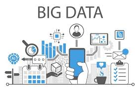

Big Data
Links:
Importance of big data
Companies use the big data accumulated in their systems to improve operations, provide better customer service, create personalized marketing campaigns based on specific customer preferences and, ultimately, increase profitability. Businesses that utilize big data hold a potential competitive advantage over those that don't since they're able to make faster and more informed business decisions, provided they use the data effectively.
For example, big data can provide companies with valuable insights into their customers that can be used to refine marketing campaigns and techniques in order to increase customer engagement and conversion rates.
In the energy industry, big data helps oil and gas companies identify potential drilling locations and monitor pipeline operations; likewise, utilities use it to track electrical grids. Financial services firms use big data systems for risk management and real-time analysis of market data. Manufacturers and transportation companies rely on big data to manage their supply chains and optimize delivery routes. Other government uses include emergency response, crime prevention and smart city initiatives
